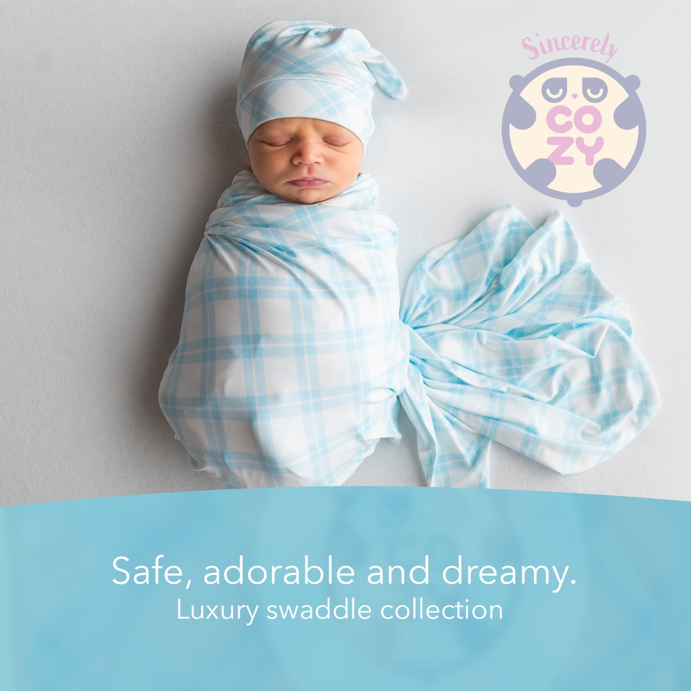

More prints
Cozy Teddy Bear · Dreamy Clouds · Little Butterfly · Pickaboo Bear · Rose Petal

Bamboo Swaddle Blanket
Baby Blue is the plaid in our collection: a pale, sky-blue check printed on a white ground, with lines that cross at angles for a relaxed, classic look. It is the quietest of the six prints, which makes it an easy pick for parents who want a classic pattern rather than an illustrated one. Nothing in it is a character or a creature, only lines and squares of blue.
Like every Sincerely Cozy swaddle, it is a 47" × 47" square made from 95% bamboo rayon. That fabric is lightweight and breathable, hypoallergenic, and has a stretch that makes it easy to wrap. It is also meant to stay soft after repeated washes, so the plaid you unwrap at a baby shower is the one you are still using months later.
The square shape is what makes it useful beyond swaddling. It works as a nursing cover, a stroller canopy, a burp cloth or a tummy time blanket, and a pale plaid like this one pairs easily with whatever else is in the diaper bag.
The set is photographed with a matching knotted hat. Machine washable; see our care instructions and why we use bamboo.
Cozy Teddy Bear · Dreamy Clouds · Little Butterfly · Pickaboo Bear · Rose Petal